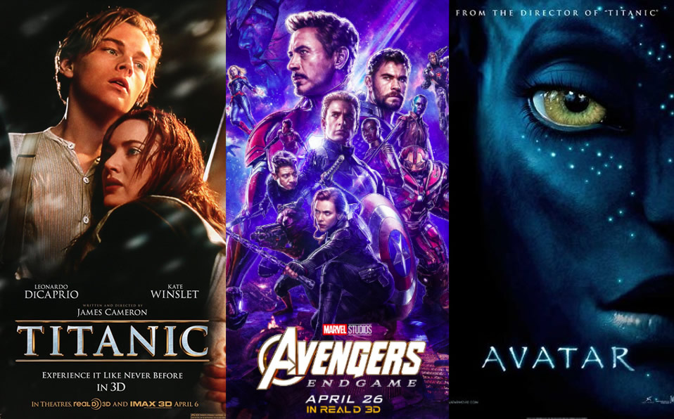

En este blog hablaremos del cine, con el objetivo claro del entretenimiento. No estaremos
criticando las películas, o no de la manera que se piensa, sino que enseñaremos los aspectos
positivos que te brindan el ver y disfrutar cine. También hablaremos de franquicias grandes
que han estado en la pantalla grande durante años, como el caso de Star Wars.
Desarrollo
El cine ha existido ya por más de cien años y es actualmente uno de los medios de
entretenimiento más importantes y grandes. Aunque, al igual que va creciendo, en algunas
cosas ha rebajado su calidad con tal de generar más ganancias. Aún así, no se le puede
quitar el mérito a todo el trabajo hecho por los directores y productores al expresar algo y
plasmarlo en una pantalla.
El entretenimiento fue uno de los principales objetivos de los filmes antiguos, y poco a poco
ha tomado más calidad para que su narración y planteamiento de qué enseñar y cómo enseñarlo
crezca. Nuevas tecnologías y técnicas han llevado a que las historias fantásticas que uno se
imagina en su cabeza ahora puedan ser mostradas a todo el público.
Motivación
Somos grandes fans del cine, especialmente de las historias heróicas, complejas y que tratan
de mostrar lados de la vida que, en este mundo que se mueve muy rápido, olvidamos. No todo
se trata de generar dinero, y no todo tiene que ser perfecto para que sea “perfecto” para
ti. Estas y otras cosas son las que nos han enseñado los personajes de cada una de estas
magníficas obras.
Rankings: Las Películas más taquilleras de la historia
09/10/22
Furious 7
The Avengers
The Lion King (2019)
Jurassic World
Spider-Man: No Way Home
Avengers: Infinity War
Star Wars: Episode VII - The Force Awakens
Titanic
Avengers: Endgame
Avatar

Páginas oficiales de información
09/10/22
Aquí se encuentran algunas de las páginas de críticas más populares entre los cinéfilos,
llenas de reseñas, conversaciones e información sobre el mundo del cine:
Una gran crítica a la industria del cine en los últimos años ha sido la carencia de
visión y creatividad artística en sus obras, con declaraciones como Martin Scorsese
comparando
a las películas de superhéroes con parques de diversiones o Quentin Tarantino comentando que
la era del cine actual es una de las peores eras en toda la historia del medio.
Desafotunadamente, estas declaraciones tienen su lado de verdad, considerando que la mayoría
de las grandes producciones actuales son simples productos diseñados para atraer y
satisfacer
a la mayor cantidad de gente, son historias creadas por un comité de productores pensando en
qué podría generarles más ingreso.
Pero este año, un blockbuster en particular se levanta de entre las sombras para demostrar
que aún hay lugar para una visión artístico en estas producciones.
"The Batman", dirigida por Matt Reeves y protagonizada por Robert Pattinson es una anomalía
en el mundo actual del entretenimiento masivo, una película con algo real que decir acerca
de estos
personajes, una historia de abandonar la venganza y la furia y convertirla en algo más. Un
filme
que nos da esperanza de ver el cine blockbuster de regresar a lo que alguna vez fue.
Loverboy Media es un canal de análisis de películas en el siempre busca la empatía y el
positivismo y encontrar qué es lo que alguien puede amar en estas obras cinematográficas.
Pinocho
15/11/22
Un niño de madera y un director con un sueño
La esperada adptación del clásico cuento de hadas sobre Pinocho, el niño de madera,
está a muy pocos días de su estreno mundial, llegando a prinipios de diciembre a la
plataforma de Netflix en todo el mundo, e incluso ya ha llegado a salas exclusivas de
Cine
en Estados Unidos, Europa y a lo largo de toda Latinoamérica. La película, la
cual se
postula a favorita para llevarse el premio de la Academia a mejor película animada en la
próxima entrega de los Oscares, es probablemente uno de los proyectos más personales del
aclamado director mexicano, debido a su conexión personal con la historia desde su juventud,
al grado de que Del Toro luchó contra todas las adversidades para que su versión de este
clásico
cuento de hadas se hiciera realidad. Y vaya que hubo muchas adversidades.
La película fue anunciada en 2008, para originalmente, tener un estreno en salas en 2013.
En su anuncio original, Del Toro dejó muy en claro qué tan importente era este
proyecto
para él, declarando: ninguna forma de arte ha influido en mi vida y mi
trabajo más que
la animación y ningún personaje en la historia ha tenido una conexión personal tan
profunda
conmigo como Pinocho [...] quería hacer esta película desde que tengo memoria.
En 2011, la película fue anunciada para ser codirigida por Gris Grimly y Mark Gustafson,
con un guión escrito por Del Toro y un estilo de animación completamente hecho con
Stop-Motion,
sin embargo, en 2012 la producción entró en "development hell" y fue incapaz de siquiera
comenzar su filmación, mucho menos de terminar la cinta para 2013 como se había esperado,
esto dejó al proyecto completamente en el limbo por varios años, hasta 2017, cuando Del Toro
comentó que el presupuesto esperado de la cinta sería de unos 35 000 000 dólares, y que
ningún estudio había estado dispuesto a financiarlo. Productores de la cinta sugirieron
realizarla en 2D para reducir significativamente su costo, pero Del Toro continúo luchando
para traer su visión a la realidad tal y como él lo había originado. No fue hasta 2018 que
Netflix tomó el proyecto, esperando un estreno a cines y en su plataforma para 2022.
Otro Pinocho y el dilema de los Remakes
Parece que este año ha sido uno atatreado para el niño de madera, ya que además de su
interpretación por Del Toro, la historia de Pinocho tuvo ya una segunda adptación este año
a través del Remake hecho por Disney para su plataforma de streaming y dirigida por
Robert Zemeckis,
reconocido por haber dirigido grandes cintas como la trilogía de "Back to the Future" y
"Forest Gump"
junto con Tom Hanks, quien también tuvo participación en esta "nueva"
adaptación. Suena como Una
fórmula para el éxito ¿no? Una versión de Pinocho hecha por un gran director y producida
por el estudio que le dio fama a la historia en primer lugar.
¿Qué podría salir mal? Bueno, muchas cosas al parecer.
El remake de Pinocho sufre de los mismos problemas que la mayoría de los remakes de Disney
en los últimos años, y es la muestra de falta de interés del estudio por querer hacer algo
creativo e innovador, y solamente querer generar ganancias a través de alguna IP
(intelectual
Property) ya establecida, buscando atraer a nuevos suscriptores para su servicio de
streaming
únicamente a través de la nostalgia.
Ver nuevas versiones y visiones de una historia que ya se ha contado antes no es nada
negativo,
toma de ejemplo las múltiples versiones de James Bond que hemos visto, o algunas de los
grandes
remakes de la historia cinematográfica como "The Thing" de John Carpenter o "Invasion of the
Body
Snatchers" de Philip Kaufman, pero el problema se encuentra justamente en lo "nuevo".
Los mejores
remakes son aquellos que toman una IP ya existente y logran contar una nueva versión de
esta historia
y sus personajes mientras mantienen la misma esencia de la original. Creando su propia
identidad
pero manteniendo el mismo espíritu que el pasado. Y cuando se trata de las
reinterpretaciones de
Disney, caen en ambos extremos, o rehacen la misma película que antes pero en una versión
inferior
debido a los limitantes que trae el rehacer una animación a live-action (como es el caso de
Lion King (2019) y ahora Pinocho (2022)) o se distancian tanto de la original que no queda
nada
de la esencia de esta (como fue el caso con Mulán (2020)).
Pinocho de Guillermo del Toro promete no caer en estos mismos problemas que cometió su
contraparte
Disneyficada, sino posiblemente entregar una de los mejores remakes de los últimos años,
al traer la
historia de Pinocho con una visión completamente diferente pero manteniendo todo aquello
que le da
esencia a la historia.
El director mexicano Guillermo Del Toro en la producción
de su adptación del cuento de Pinocho.
 Introducción a las películas
Introducción a las películas
 Rankings: Las Películas más taquilleras de la historia
Rankings: Las Películas más taquilleras de la historia Páginas oficiales de información
Páginas oficiales de información The Batman
The Batman Pinocho
Pinocho